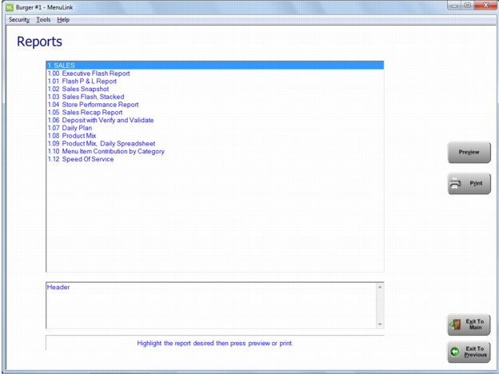
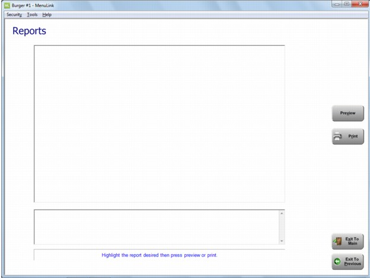
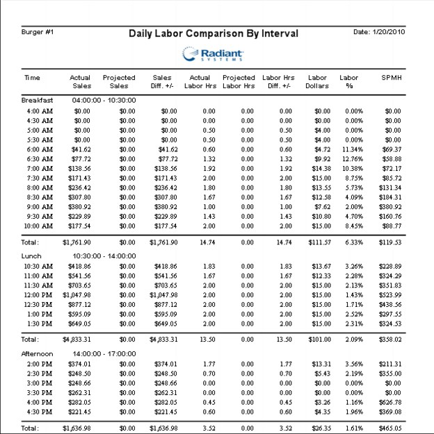
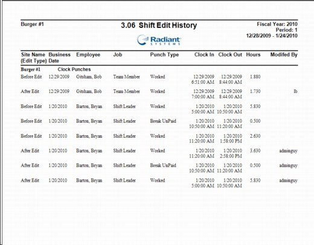

Reports This section includes samples and descriptions of Manager-related reports available in MenuLink Client. Depending on your system set-up, you may not have access to all reports and selection options described. Contact your MenuLink Administrator for more information. For general information on how to view and print reports, as well as selecting report options, see Viewing and Printing Reports. You can access Manager reports from the Manager Tools Switchboard or from the main Labor Switchboard. The main Labor Switchboard provides access to all reports available to you.   Daily Labor Comparison by Interval The Daily Labor Comparison by Interval report shows the actual sales to actual labor dollars and the sales per man hour (SPMH)by interval based on the time period selected when generating the report. Depending on reports configured for your MenuLink Client system, you may also have additional reports for specific dining destinations.  Forecast Adjustment Alert The Forecast Adjustment Alert report